Objetivo. Aplicar os conteúdos da disciplina a dados reais do Campeonato Brasileiro Série A 2024, num sistema interativo em que cada página corresponde a um conteúdo do plano de curso.
Brasileirao_Dataset (Adão Duque, GitHub): repositório público e gratuito, sem chave de API. O sistema baixa três arquivos, filtra a temporada 2024 e salva o recorte em data/. Assim o app funciona sem internet.
| Arquivo | O que traz | Uso no sistema |
|---|---|---|
| Partidas | rodada, data, hora, mandante, visitante, placar, técnico, formação, arena, estado | Resultado, horário, formação, gols por partida, classificação |
| Gols | clube, atleta, minuto (inclusive 45+x e 90+x), tipo (normal, pênalti, gol contra) | Gols por tempo, minuto e autor do 1º gol, artilheiros |
| Cartões | clube, atleta, posição, minuto, cor | Cartões por partida, posição e disciplina dos jogadores |
| Arquivo | Papel |
|---|---|
| api_client.py | Baixa, filtra e guarda os dados; monta as tabelas de partidas, gols, cartões e jogadores |
| prob_stats_engine.py | Motor de cálculo: um método para cada conteúdo da disciplina (pandas, numpy, scipy) |
| visualizer.py | Gráficos: colunas, setores, histograma, ogiva, boxplot, Venn, árvore, PMF, densidades |
| app.py | Interface em Streamlit com 9 páginas |
EstatísticaPopulação e amostraTipos de variáveis
| Variável | Classificação | Exemplos |
|---|---|---|
| Resultado da partida | Qualitativa nominal | Vitória do mandante, Empate, Vitória do visitante |
| Clube, estado, formação tática | Qualitativa nominal | Flamengo; RJ; 4-2-3-1 |
| Faixa de horário | Qualitativa ordinal | Tarde < Fim de tarde < Noite |
| Rodada, gols, cartões | Quantitativa discreta | 0, 1, 2, 3… (contagens) |
| Minuto do gol, tempo até o 1º gol | Quantitativa contínua | qualquer valor entre 0 e 90 minutos |
Classificação final (página 1): 1º Botafogo 79 pts · 2º Palmeiras 73 · 3º Flamengo 70 · 4º Fortaleza 68 · 5º Internacional 65 … 19º Atlético-GO 30 · 20º Cuiabá 30.
fifriFiFriClassesSturges
fri = fi / n · Fi = f1 + f2 + … + fi · Fri = Fi / n · Σfi = n · Σfri = 100%| Resultado | fi | fri | Fi | Fri |
|---|---|---|---|---|
| Vitória do mandante | 180 | 47,37% | 180 | 47,37% |
| Empate | 101 | 26,58% | 281 | 73,95% |
| Vitória do visitante | 99 | 26,05% | 380 | 100% |
Outras qualitativas no app: horário (noite 49,2%, tarde 28,9%, fim de tarde 21,8%), quem marcou primeiro (mandante 219, visitante 135, sem gols 26), estado do mandante (RJ e SP com 76 jogos cada), formação (4-2-3-1 em 217 jogos).
| Gols (xi) | 0 | 1 | 2 | 3 | 4 | 5 | 6 | 7 | 8 |
|---|---|---|---|---|---|---|---|---|---|
| fi | 26 | 77 | 97 | 104 | 49 | 17 | 6 | 3 | 1 |
| fri (%) | 6,84 | 20,26 | 25,53 | 27,37 | 12,89 | 4,47 | 1,58 | 0,79 | 0,26 |
| Fi | 26 | 103 | 200 | 304 | 353 | 370 | 376 | 379 | 380 |
| Fri (%) | 6,84 | 27,11 | 52,63 | 80,00 | 92,89 | 97,37 | 98,95 | 99,74 | 100 |
Leitura: o valor mais frequente é 3 gols (27,37%). Pela Fri, 52,63% dos jogos tiveram até 2 gols e 80% tiveram até 3.
| Classe (min) | 1⊢10 | 10⊢19 | 19⊢28 | 28⊢37 | 37⊢46 | 46⊢55 | 55⊢64 | 64⊢73 | 73⊢82 | 82⊢91 |
|---|---|---|---|---|---|---|---|---|---|---|
| xi | 5,5 | 14,5 | 23,5 | 32,5 | 41,5 | 50,5 | 59,5 | 68,5 | 77,5 | 86,5 |
| fi | 66 | 73 | 77 | 62 | 143 | 79 | 105 | 87 | 77 | 160 |
| Fi | 66 | 139 | 216 | 278 | 421 | 500 | 605 | 692 | 769 | 929 |
Com h = 9, bastam 10 classes para cobrir o valor máximo (90). A notação li ⊢ ls inclui o limite inferior e exclui o superior; xi é o ponto médio (li + ls)/2.
ColunasSetoresHistogramaPolígonoOgivaLinhaMédiaMedianaModa
| Gráfico | Quando usar | No app |
|---|---|---|
| Colunas / barras | Qualitativas e discretas com poucos valores | Resultado, gols por partida, cartões |
| Setores (pizza) | Partes de um todo (soma 100%) | Resultado, horário, quem marcou primeiro |
| Histograma | Contínua agrupada em classes (barras justapostas) | Minuto dos gols, minuto do 1º gol, gols por rodada |
| Polígono de frequências | Liga os pontos médios das classes | Sobre o histograma |
| Ogiva | Frequência acumulada (cruza 50% na mediana) | Minuto dos gols |
| Linha | Evolução ao longo do tempo | Gols por rodada (média 24,4) |
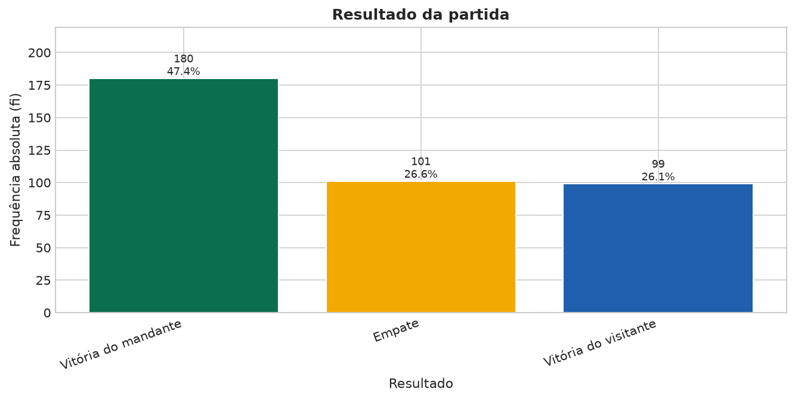
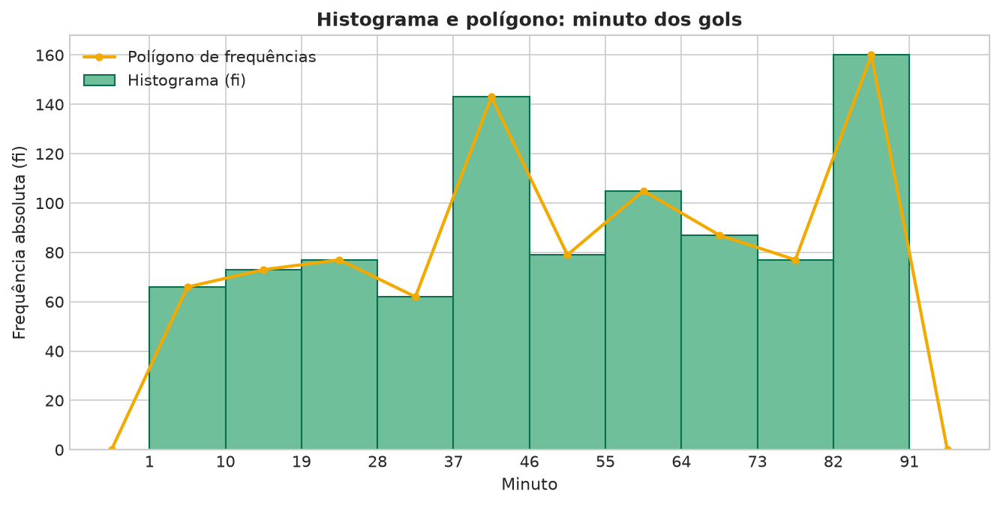
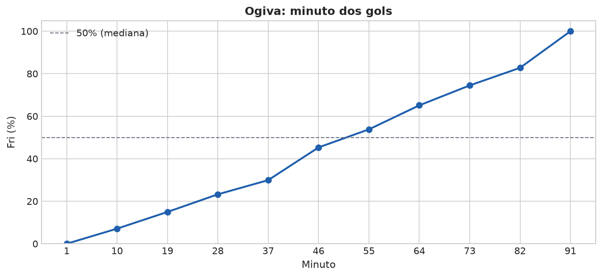
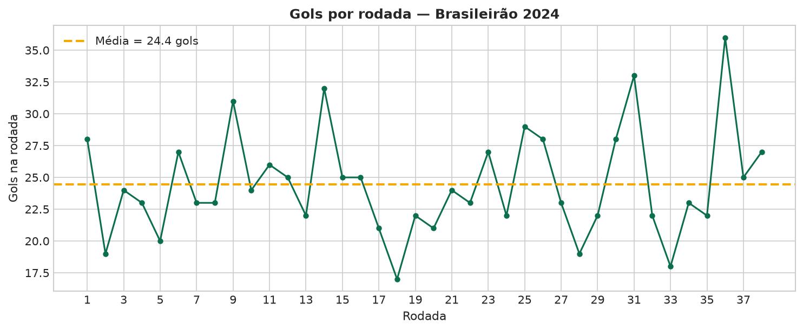
| Variável | n | Média | Mediana | Moda | Leitura |
|---|---|---|---|---|---|
| Gols por partida | 380 | 2,445 | 2 | 3 | Média > mediana: poucos jogos com muitos gols puxam a média |
| Minuto dos gols | 929 | 50,84 | 52 | 90 | Moda em 90 por causa dos acréscimos |
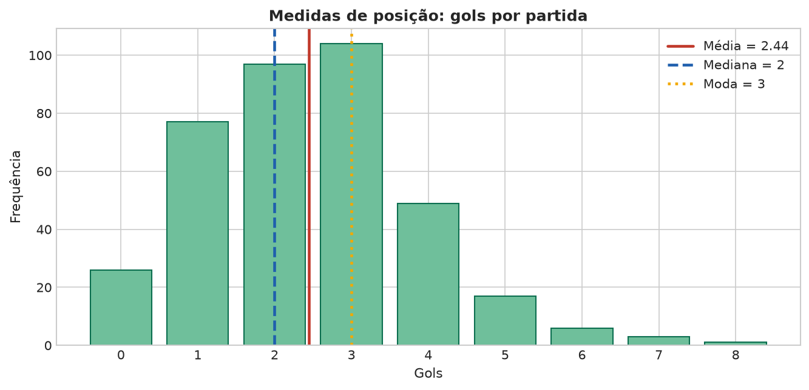
Média agrupada = 50,79 (bruta 50,84) · Mediana agrupada = 50,96, na classe 46⊢55 · Moda de Czuber = 85,07, na classe modal 82⊢91.
AmplitudeVariânciaDesvio padrãoCVQuartisDIQAssimetriaOutliersBoxplot
AT = máx − mín · s² = Σ(xi − x̄)² / (n − 1) · σ² = Σ(xi − x̄)² / n · s = √s² · CV = (s / x̄)·100%| Medida | Valor | Interpretação |
|---|---|---|
| Amplitude total | 8 | de 0 a 8 gols |
| Variância amostral s² · populacional σ² | 2,021 · 2,015 | s² divide por n − 1 (estimador não viesado) |
| Desvio padrão s | 1,422 | afastamento típico em torno da média, em gols |
| Coeficiente de variação | 58,15% | alta dispersão (> 30%) |
| Q1 · Q2 · Q3 | 1 · 2 · 3 | metade central dos jogos tem de 1 a 3 gols |
| Diferença interquartílica DIQ | 2 | Q3 − Q1 |
| Limites de Tukey | [−2 ; 6] | Q1 − 1,5·DIQ e Q3 + 1,5·DIQ |
| Outliers | 4 jogos | os 3 jogos de 7 gols e o de 8 gols |
| Assimetria de Pearson (mediana) | +0,94 | assimétrica positiva moderada (cauda à direita) |
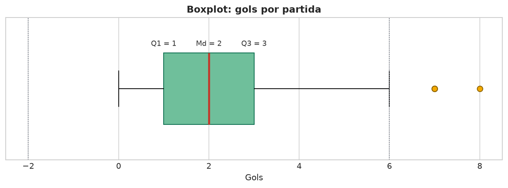
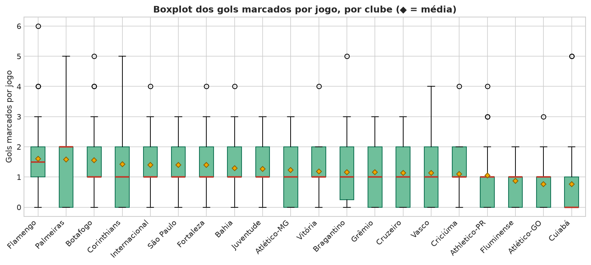
Melhores ataques: Flamengo 1,61 (s = 1,24), Palmeiras 1,58, Botafogo 1,55. Ataque mais regular (menor CV): São Paulo, 69,8%. Mais irregular (maior CV): Cuiabá, 156,6% (média 0,76, mas com um jogo de 5 gols).
| Evento | Clássica | Frequentista |
|---|---|---|
| Vitória do mandante | 33,33% | 47,37% (180) |
| Empate | 33,33% | 26,58% (101) |
| Vitória do visitante | 33,33% | 26,05% (99) |
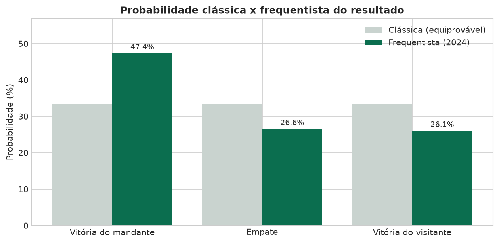
A suposição de resultados equiprováveis falha: jogar em casa aumenta a chance de vencer. No espaço amostral dos placares, houve 27 placares distintos; os mais comuns foram 1×1 (13,42%), 2×1 (13,16%) e 1×0 (12,37%). P(0×0) = 6,84%; P(3 ou mais gols) = 47,37%; o complementar P(até 2 gols) = 52,63%.
Eventos não exclusivos: A = o mandante marca no 1º tempo (195 jogos, 51,32%); B = o visitante marca no 1º tempo (147 jogos, 38,68%); A ∩ B = 80 jogos (21,05%).
P(A ∪ B) = 51,32% + 38,68% − 21,05% = 68,95%, igual à contagem direta de jogos com gol no 1º tempo. P(1º tempo sem gols) = 31,05%.
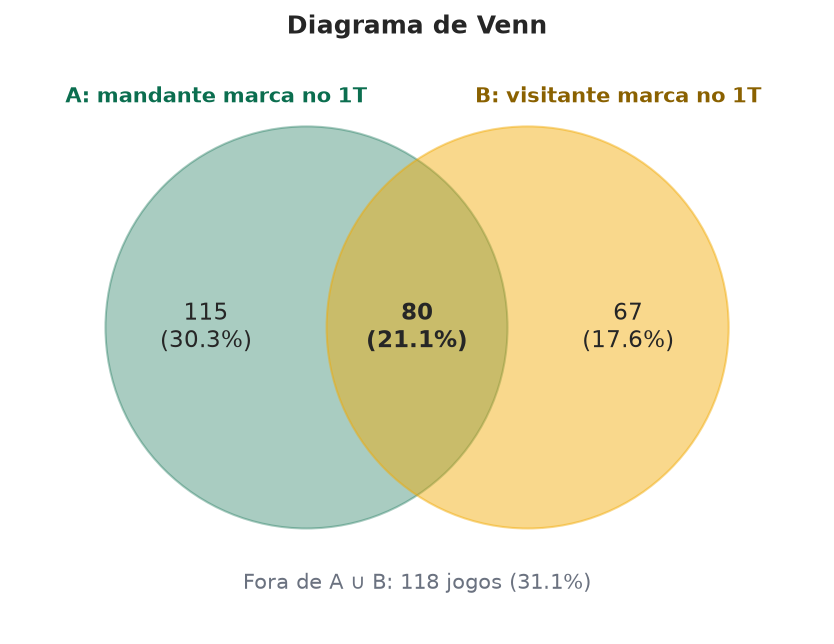
| A = vitória do mandante · B = mandante marca o 1º gol | Valor |
|---|---|
| P(A) · P(B) | 47,37% (180) · 57,63% (219) |
| P(A ∩ B) | 42,37% (161 jogos) |
| P(A | B) = 161 / 219 | 73,52% |
| P(A)·P(B), se fossem independentes | 27,30% ≠ 42,37% → dependentes |
Independência: C = o mandante marca no 1º tempo; D = o mandante marca no 2º tempo. P(D) = 55,79% e P(D | C) = 54,36%; P(C ∩ D) = 27,89% contra P(C)·P(D) = 28,63%. A diferença é de só 0,73 ponto percentual: aproximadamente independentes.
O primeiro gol divide as partidas em três eventos mutuamente exclusivos e exaustivos (uma partição): B1 = o mandante marcou primeiro, B2 = o visitante marcou primeiro, B3 = jogo sem gols. Evento de interesse: A = vitória do mandante.
Probabilidade Total: P(A) = Σ P(A | Bi)·P(Bi) · Bayes: P(Bi | A) = P(A | Bi)·P(Bi) / P(A)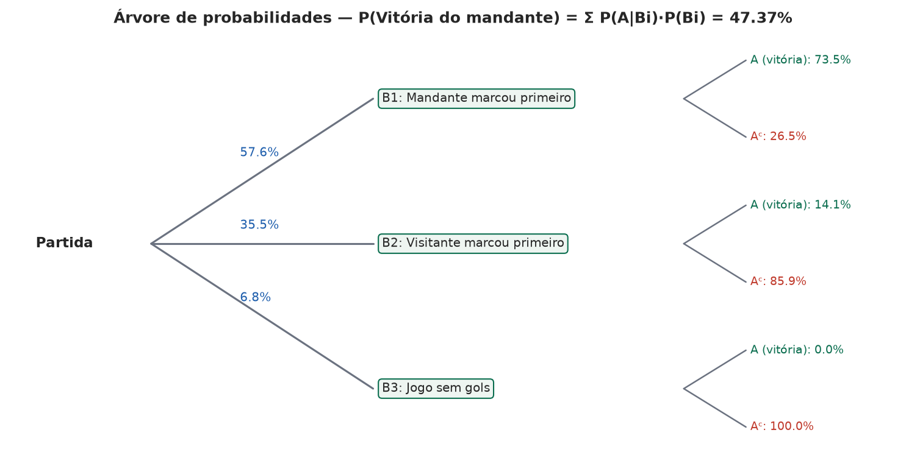
| Partição | Jogos | P(Bi) | P(A | Bi) | P(A | Bi)·P(Bi) | Bayes P(Bi | A) |
|---|---|---|---|---|---|
| B1 mandante marcou primeiro | 219 | 57,63% | 73,52% | 42,37% | 89,44% |
| B2 visitante marcou primeiro | 135 | 35,53% | 14,07% | 5,00% | 10,56% |
| B3 jogo sem gols | 26 | 6,84% | 0% | 0% | 0% |
| Total | 380 | 100% | P(A) = 47,37% | 100% |
Interpretação: a Probabilidade Total vai das causas para o efeito e soma os ramos da árvore: 47,37%, que é exatamente a frequência de vitórias do mandante. Bayes faz o caminho inverso: 89,44% das vitórias do mandante vieram de jogos em que ele marcou primeiro, e apenas 10,56% foram viradas.
Por clube (Botafogo, 38 jogos): P(B1) = 65,79%, P(A|B1) = 88%; P(B2) = 23,68%, P(A|B2) = 11,11%; P(B3) = 10,53%. Pela Probabilidade Total, P(vitória) = 57,89% + 2,63% + 0% = 60,53% (23/38). Por Bayes, 95,65% das vitórias do campeão vieram de jogos em que ele abriu o placar.
| x | p(x) | F(x) |
|---|---|---|
| 3 | 0,1316 | 0,2526 |
| 4 | 0,1711 | 0,4237 |
| 5 | 0,1553 | 0,5789 |
| 6 | 0,1211 | 0,7000 |
| 7 | 0,1447 | 0,8447 |
E[X] = 5,18 amarelos · Var(X) = 5,39 · σ = 2,32. Exemplo: P(X ≤ 5) = 57,89%.
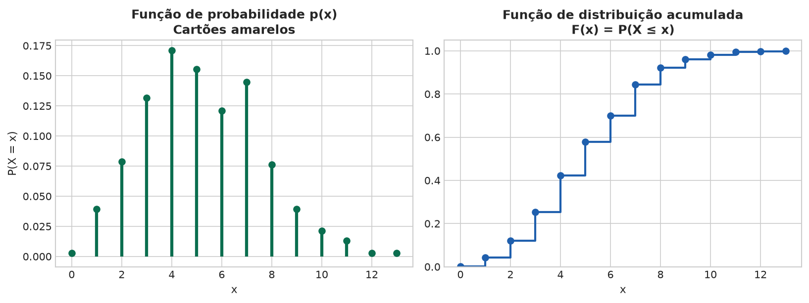
Uma partida em casa: X = 1 se o mandante vence. p = 180/380 = 0,4737, Var(X) = 0,4737·0,5263 = 0,2493. Em n = 5 jogos em casa: E[X] = 2,37 vitórias e P(pelo menos 1 vitória) = 1 − 0,5263⁵ = 95,96%. Para o Botafogo (12 vitórias em 19 jogos em casa, p = 0,632): P(pelo menos 1 vitória em 5) = 99,32%.
Hipóteses da Binomial: n ensaios fixos; cada um com sucesso ou fracasso; p constante; ensaios independentes.
λ = média = 2,445 gols; variância amostral 2,021 (próxima de λ, como a Poisson prevê).
| Evento | Poisson | Observado |
|---|---|---|
| P(X = 0) | 8,67% | 6,84% |
| P(X = 2) | 25,92% | 25,53% |
| P(X ≥ 3) | 44,19% | 47,37% |
Gols do mandante por tempo: λ1T = 0,663 → P(gol no 1T) = 1 − e^(−0,663) = 48,5% (observado 51,3%); λ2T = 0,747 → 52,6% (observado 55,8%); no jogo λ = 1,411 → 75,6% (observado 79,2%).
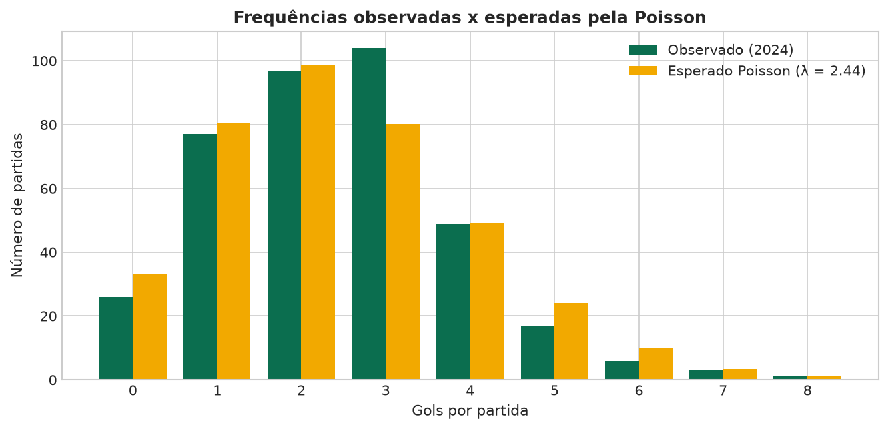
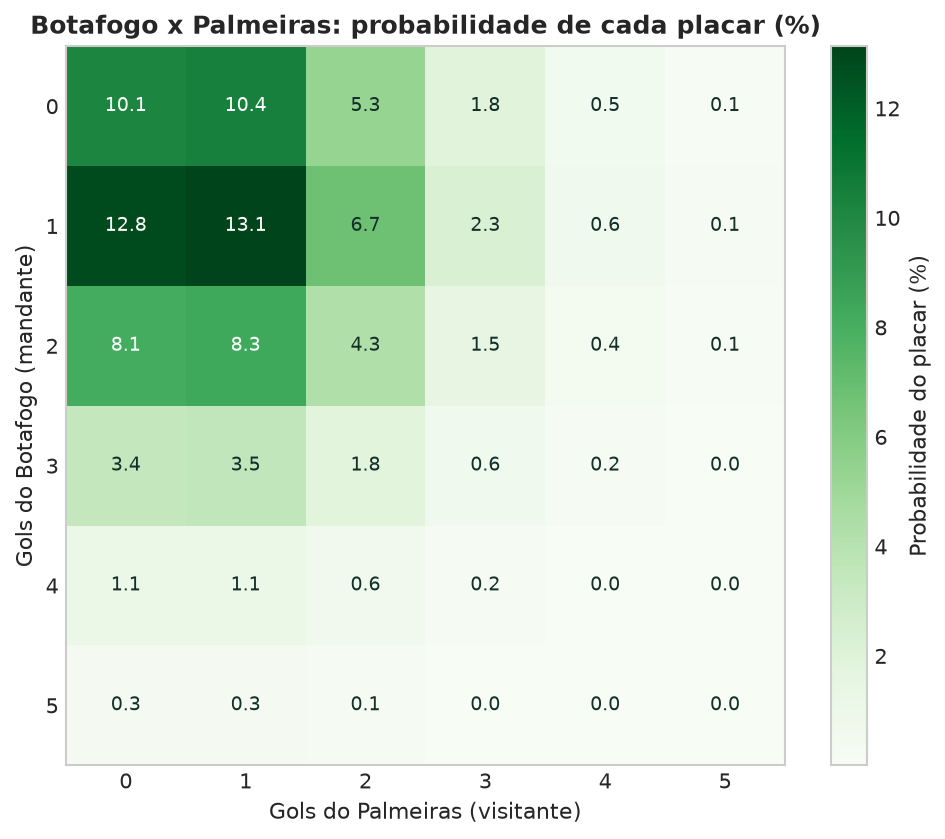
λ Botafogo = 1,263; λ Palmeiras = 1,026 (média entre o ataque de um e a defesa do outro). Cada placar: P(i × j) = Poi(i; 1,263)·Poi(j; 1,026).
Vitória do Botafogo 41,75% · Empate 28,19% · Vitória do Palmeiras 30,06%. Placar mais provável: 1×1 (13,14%). P(3 ou mais gols) = 40,11%.
Para variáveis contínuas P(X = x) = 0: só intervalos têm probabilidade, dada pela área sob a densidade, P(a ≤ X ≤ b) = F(b) − F(a).
Com U(0, 90): f(x) = 1/90 = 0,0111; E[X] = 45 (observado 50,8); σ = 25,98 (observado 26,23). Cada faixa de 15 minutos teria 16,67%.
| Faixa | Observado | Uniforme |
|---|---|---|
| 0–15 | 12,92% | 16,67% |
| 30–45 | 19,59% | 16,67% |
| 75–90 | 22,60% | 16,67% |
Os dados têm menos gols no começo e mais no fim de cada tempo (cansaço, acréscimos): a Uniforme é só uma primeira aproximação.
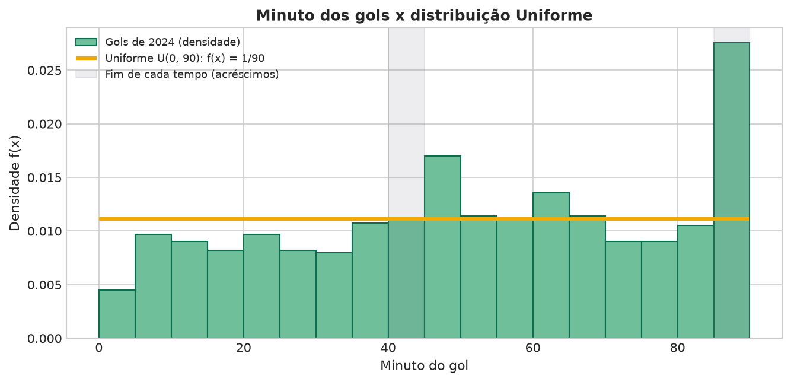
354 jogos com gol (26 terminaram 0×0). Tempo médio = 33,3 min, então λ = 1/33,3 = 0,0300 por minuto.
| 1º gol até | Exponencial | Observado |
|---|---|---|
| 15 min | 36,27% | 30,79% |
| 30 min | 59,38% | 51,13% |
| 45 min | 74,11% | 74,01% |
| 60 min | 83,50% | 85,59% |
Falta de memória: se está 0×0 aos 30 min, a chance de continuar sem gols por mais 15 min é P(T > 15) = e^(−0,03·15) = 63,73%, a mesma do início do jogo.
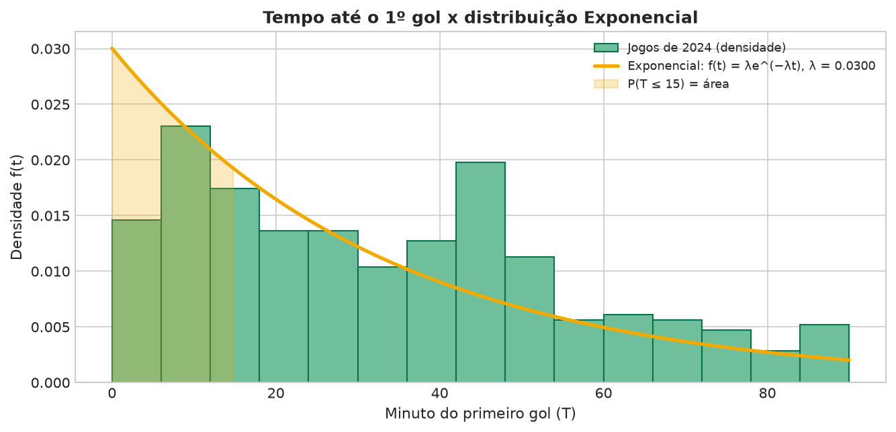
X = total de gols da rodada (soma de 10 jogos); 38 observações; μ = 24,45, σ = 4,15.
P(20 ≤ X ≤ 30): z1 = (20 − 24,45)/4,15 = −1,07; z2 = (30 − 24,45)/4,15 = 1,34. P = Φ(1,34) − Φ(−1,07) = 76,76% (observado 78,95%). P(X > 30) = 9,05% (observado 10,53%).
Regra empírica observada: 73,7% em μ ± σ, 94,7% em μ ± 2σ, 100% em μ ± 3σ. Rodada 36: 36 gols (z = 2,78); rodada 18: 17 gols (z = −1,79).
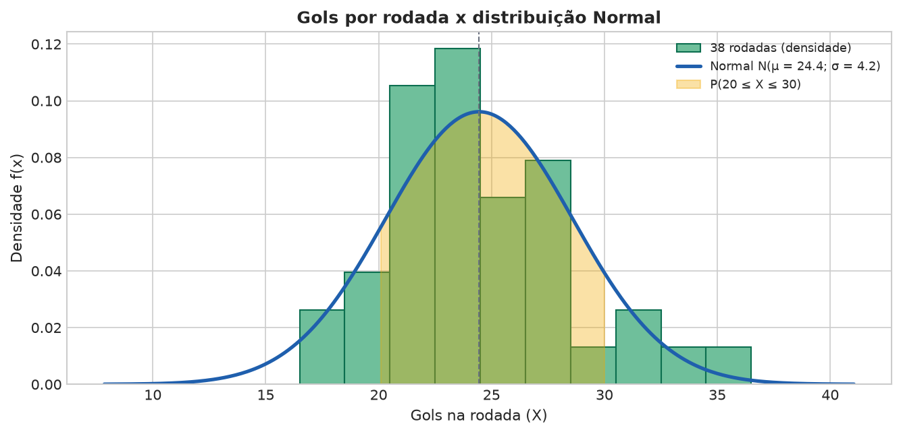
É a página que junta tudo num caso prático. Ao escolher um clube, ela mostra posição, pontos, V/E/D, aproveitamento, gols pró e contra, média e desvio de gols marcados. Ao escolher um jogador (586 opções, todos que marcaram ou receberam cartão), mostra gols, gols por tempo, pênaltis, cartões e quatro abas:
| Aba | Conteúdo | Exemplo: Yuri Alberto (Corinthians, artilheiro) |
|---|---|---|
| Estatística descritiva | Gols por faixa de minutos; tabela de frequências e medidas dos gols por jogo | 15 gols (8 no 1T, 7 no 2T, 3 pênaltis), em 12 jogos |
| Poisson | λ = gols/38 e P(marcar) = 1 − e^(−λ) | λ = 0,395 → P(marcar) = 32,6% (observado 31,6%) |
| Binomial | Y = jogos com gol nos próximos n; p = jogos com gol/38 | p = 12/38 = 0,316 |
| Condicional e Bayes | P(V | M), P(V | Mᶜ), P(M | V) e Probabilidade Total | P(V | M) = 58,3% × P(V | Mᶜ) = 30,8%; P(M | V) = 46,7% |
Outro exemplo forte: Estêvão (Palmeiras, 13 gols): quando marca, o Palmeiras vence 83,3% das vezes; quando não marca, 46,2% (+37,2 p.p.).
1. “Os dados são reais?”
Sim. Placares, gols (autor e minuto) e cartões vêm de um dataset público do Brasileirão. Conferimos que os gols por clube batem com o placar nas 380 partidas.
2. “Por que a Poisson para gols?”
Gols são contagens de eventos relativamente raros num intervalo fixo. A média (2,445) e a variância (2,021) são próximas, como a Poisson exige, e as frequências esperadas acompanham as observadas.
3. “Qual a diferença entre a Binomial e a Poisson aqui?”
A Binomial conta sucessos em n ensaios fixos (vitórias em 5 jogos em casa). A Poisson conta eventos num intervalo sem n fixo (gols numa partida).
4. “Por que a assimetria dá sinais diferentes?”
Em dados discretos com poucos valores, a moda é instável (o 1º coeficiente de Pearson dá −0,39). Usamos o 2º coeficiente, com a mediana (+0,94), que é mais estável.
5. “Exclusivos e independentes são a mesma coisa?”
Não. Vitória do mandante e empate são exclusivos (não ocorrem juntos). Gol no 1º e no 2º tempo do mandante são aproximadamente independentes (podem ocorrer juntos, sem um afetar o outro).
6. “Como saber se o Bayes está certo?”
A Probabilidade Total reproduz a frequência direta (47,37%) e P(B1 | A) = 89,44% coincide com a contagem 161/180.
7. “Por que a Uniforme não se ajusta bem?”
Ela supõe todos os minutos igualmente prováveis. Os dados mostram concentração no fim de cada tempo (acréscimos, cansaço). Ela serve como modelo de referência.
8. “Por que a Normal para gols por rodada?”
Cada rodada é a soma de 10 jogos; somas de muitas parcelas tendem à Normal. A regra empírica observada (73,7% / 94,7% / 100%) fica próxima da teórica.
| Tempo | Página | O que mostrar |
|---|---|---|
| 0:00–1:00 | Abertura | Objetivo, fonte dos dados, arquitetura |
| 1:00–2:00 | 1 | População, amostra e tipos de variáveis |
| 2:00–3:30 | 3 e 4 | Tabela de gols por partida e Fri; histograma dos minutos; média 2,44 × mediana 2 × moda 3 |
| 3:30–4:30 | 5 | CV de 58%, quartis, 4 outliers no boxplot; regularidade dos clubes |
| 4:30–6:30 | 6 | Clássica × frequentista; união com Venn; P(vitória | marcou primeiro) = 73,5% |
| 6:30–8:00 | 7 | Árvore: P(A) = 47,37% e Bayes 89,44%; exemplo do Botafogo |
| 8:00–9:30 | 8 | Binomial (vitórias em casa) e Poisson (gols); Botafogo × Palmeiras |
| 9:30–11:00 | 9 | Uniforme, Exponencial (falta de memória), Normal com padronização |
| 11:00–12:00 | 2 e fecho | Um artilheiro; limitações |
| Conteúdo | Fórmulas |
|---|---|
| Frequências | fri = fi/n ; Fi = Σfi ; Fri = Fi/n ; Sturges k ≈ 1 + 3,322·log n ; h = AT/k |
| Posição (brutos) | x̄ = Σxi/n ; Md = valor central ; Mo = mais frequente |
| Posição (agrupados) | x̄ = Σxi·fi/n ; Md = li + [(n/2 − Fant)/fi]·h ; Mo = li + [d1/(d1 + d2)]·h |
| Dispersão | AT = máx − mín ; s² = Σ(xi − x̄)²/(n − 1) ; σ² = Σ(xi − x̄)²/n ; s = √s² ; CV = s/x̄·100% |
| Quartis e outliers | DIQ = Q3 − Q1 ; outlier < Q1 − 1,5·DIQ ou > Q3 + 1,5·DIQ |
| Assimetria | As1 = (x̄ − Mo)/s ; As2 = 3(x̄ − Md)/s |
| Probabilidade | P(E) = n(E)/n(S) ; 0 ≤ P ≤ 1 ; P(S) = 1 ; P(Aᶜ) = 1 − P(A) |
| União | P(A ∪ B) = P(A) + P(B) − P(A ∩ B) ; exclusivos: P(A ∪ B) = P(A) + P(B) |
| Condicional | P(A|B) = P(A ∩ B)/P(B) ; P(A ∩ B) = P(B)·P(A|B) |
| Independência | P(A ∩ B) = P(A)·P(B) ⇔ P(A|B) = P(A) |
| Prob. Total e Bayes | P(A) = ΣP(A|Bi)·P(Bi) ; P(Bi|A) = P(A|Bi)·P(Bi)/P(A) |
| V.A. discreta | E[X] = Σx·p(x) ; Var(X) = E[X²] − E[X]² ; F(x) = P(X ≤ x) |
| Bernoulli | E = p ; Var = p(1 − p) |
| Binomial | P(X = k) = C(n,k)·p^k·(1 − p)^(n−k) ; E = np ; Var = np(1 − p) |
| Poisson | P(X = k) = e^(−λ)λ^k/k! ; E = Var = λ |
| Uniforme | f = 1/(b − a) ; E = (a + b)/2 ; Var = (b − a)²/12 |
| Exponencial | F(t) = 1 − e^(−λt) ; E = 1/λ ; Var = 1/λ² ; sem memória |
| Normal | Z = (X − μ)/σ ; P(a ≤ X ≤ b) = Φ(zb) − Φ(za) ; 68–95–99,7 |